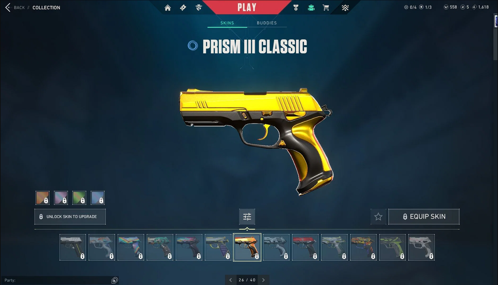

Classic
El modo de disparo principal es preciso si no se está en movimiento, y también dispone de un modo de disparo en ráfaga para los encuentros cuerpo a cuerpo.
Las armas se dividen en dos categorías, armas de mano y armas primarias. Las armas de mano consisten en pistolas, mientras que las primarias incluyen SMG, escopetas, rifles, rifles de francotirador y ametralladoras. Las armas tienen cantidades limitadas de munición pero vienen con cargadores de reserva.
El modo de disparo principal es preciso si no se está en movimiento, y también dispone de un modo de disparo en ráfaga para los encuentros cuerpo a cuerpo.
Pesada pero estable, el modo de disparo principal de la Bucky ayuda a vigilar esquinas en espacios reducidos y resulta ideal para cargar contra los enemigos cuerpo contra cuerpo.
Es un arma todoterreno con estadísticas de daño, velocidad de disparo y precisión muy equilibradas tanto a distancias cortas como medias.
El modo automático es perfecto para los encuentros en espacios reducidos, mientras que las ráfagas cortas son la opción indicada en cualquier otra situación. Es mucho más precisa si no se dispara en movimiento.
Sin embargo, va perdiendo estabilidad con el tiempo. El Vandal inflige mucho daño a larga distancia y es ideal para aquellos que se centran en acertar tiros a la cabeza.
Dispara de forma continua e inflige mucho daño con una estabilidad sorprendente. Cubrir de balas a los enemigos en espacios reducidos o recurrid al modo alternativo para convertirnos en una torreta andante.
El Operator es un fusil de francotirador de cerrojo muy potente con zoom dual. Cuenta con una movilidad nula, pero sus balas derribarán a cualquiera de un solo impacto.
Si no nos quedan balas, siempre podremos correr y el cuchillo justamente nos permite correr con rapidez, destruir objetos mucho más rápido y acabar con enemigos por la espalda de una sola cuchillada si usas el modo alternativo.